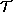

Computer Science 591i
Lambda Theories, Environment Models
Lambda Theories
We've shown that it's natural to think of mapping the  -calculus
onto a combinatory algebra. Before we can go much further in obtaining a
rigorous specification of such a map into what logicians would call a
model it's worth stepping back to build some more descriptive
apparatus around the -calculus itself.
So far, we've seen that
-calculus
onto a combinatory algebra. Before we can go much further in obtaining a
rigorous specification of such a map into what logicians would call a
model it's worth stepping back to build some more descriptive
apparatus around the -calculus itself.
So far, we've seen that
 (C) is a set of terms created from variables,
constants in C, application and abstraction. We've seen that there
are at least two equivalences over (C),
namely
(C) is a set of terms created from variables,
constants in C, application and abstraction. We've seen that there
are at least two equivalences over (C),
namely  -equivalence and
-equivalence and  -equivalence,
under which terms of (C) are regarded as
being in some way the "same". We might also expect that terms should be
considered as being the "same" under
-equivalence,
under which terms of (C) are regarded as
being in some way the "same". We might also expect that terms should be
considered as being the "same" under  -equivalence.
-equivalence.
However, there might also be laws which hold between
the constants in C. For example, if C contains an
addition operator, "+", then we'd expect that (+ x 0)
is equal to x.
If we want to support the notion of proof over (C) then we clearly will have to incorporate laws
which express the behaviour of elements of C.
To this end, we now introduce the idea of a rule of inference. In
our case, these have the form
E1 = F1,
E2 = F2,
E3 = F3
 E = F
E = F
Such rules of inference can be used to define an equational theory
that is to say, a set of formulae. The surface interpretation of a rule of
inference is that if all the terms on the left of the "" symbol are in the theory, then the term on the right is
also in the theory.
Definition
A lambda theory 
over a set C of constants is a
set of equations between terms of (C)
containing all instances of
and which is closed under the following rules of inference:
Note that a lambda theory is an infinite set of (formal) equations
between terms.
The notation
 E = F means that the equation "E
= F" is in
E = F means that the equation "E
= F" is in 
Where the meaning is clear, we shall abbreviate
E = F by
E = F.
In a given theory
, the formal equalities of the theory define an
equivalence relation on terms of (C). The
equivalence class of a term E is denoted by
[[E]]. Thus:
Recall
that a normal form of (C) is
a term that contains no redux. Recall also that if
E  (C) has a normal form
E', say, then we can find it by normal order reduction. So
[[E]] = [[E']], and we can regard E' as the canonical
member of [[E]] (up to alpha-equivalence).
(C) has a normal form
E', say, then we can find it by normal order reduction. So
[[E]] = [[E']], and we can regard E' as the canonical
member of [[E]] (up to alpha-equivalence).
If a term has no normal form, we can regard it as corresponding to a
non-terminating computation.
Definition
A lambda theory over a set C of constants is
said to be extensional if it contains all instances of
Lemma LT1
If is a lambda-theory, and E is a term, then
E = E
Proof
By we have
( x. x) E = E
hence, by SYM
E = ( x. x) E
Thus, by TRANS
E = E
We now introduce the notation
E
[x1:=E1. . .xn:=En]
to denote the simultaneous substitution of terms
Ei for variables xi
(where the variables xi are distinct and we follow
the standard rules to avoid free variable capture.
Lemma
If Ei = Fi
for i = 0,. . .n then
E0[x1:=E1. . .xn:=En]
=
F0[x1:=F1. . .xn:=Fn]
The Y combinator is a fixed-point operator.
The following text is inserted from the CS287 class notes. I'll try to
massage it into a more suitable form for our class. . .[RJP].
However it is not necessary to do this! Instead we introduce the
Y-combinator,
with the property that, for any function e:
We say that Y is a fixed point operator, that is
(Y e) has the property that when we apply e to it, it
remains unchanged. The concept of a fixed point is an important one in
mathematics and physics. Consider for example, a rotating body. The
rotation can be considered as a mapping from where the body was originally
to where it is now. The fixed point of this mapping is the axis of
rotation. More generally, in Linear Algebra, we have the concept of an
eigenvector.
In engineering generally, the design of a process for making an artefact very
often consists of finding an operation whose fixed point is the artefact, or
at least a feature of it. Thus the fixed point of the operation of planing is
a planed surface. So, if we need a plane surface we think of planing as a way
of achieving it. Likewise the fixed point of the operation of screw-cutting is
a threaded surface.
So, it is not surprising in Computer Science that a fixed-point operator is
important in constructing the artefacts that we produce - computer programs.
You might also say that e is a
symmetry of (Y e), and this is
a clue to why it works. Observe that the
data-structures we construct in Scheme
are self similar, or in a
sense, symmetric. [Note however that in
Mathematics it is usual to regard
symmetry operators as being invertible -
if you rotate a body you can rotate it
back. Computation generally throws away
information, so is not invertible].
When, for example, you take the cdr
of a
list, you still have a list. Recursion works by exploiting this symmetry.
2.3 But Y can be written as a expression!
Now, in introducing Y
we are not introducing a new construct. Here is Turing's
Y. [There's also one due to Curry].
( h .
(
( x . (h (x x)))
( x . (h (x x)))
)
)
Let's see how this works - suppose we have some arbitrary expression
e.
Applying Y to e
(Y e)  [use value for Y given above]
(
( h .
(
( x . (h (x x)))
( x . (h (x x)))
)
) e)
[substitute e for h in the body of the ( h . ..) function, strip
off h . ]
( [1]
( x . (e (x x)))
( x . (e (x x)))
)
[substitute the second ( x . . . .) expression for x in the body of
the first ( x . . . .) expression, strip off .
(e ( [2]
( x . (e (x x)))
( x . (e (x x))))
)
[use value for Y given above]
(
( h .
(
( x . (h (x x)))
( x . (h (x x)))
)
) e)
[substitute e for h in the body of the ( h . ..) function, strip
off h . ]
( [1]
( x . (e (x x)))
( x . (e (x x)))
)
[substitute the second ( x . . . .) expression for x in the body of
the first ( x . . . .) expression, strip off .
(e ( [2]
( x . (e (x x)))
( x . (e (x x))))
)
But what we have here is two expressions, [1] and [2] for (Y e),
but the second is of the form (e (Y e)).
2.4 Using Y to define recursive functions
The Y
combinator is used in theory to create recursive functions by providing
a binding for the unbound recursive call that plagued us above.
( sum .
( l .
(if
(null? l)
0
(+ (car l) (sum (cdr l))))
)
)
in:
(Y
( sum .
( l .
(if
(null? l)
0
(+ (car l) (sum (cdr l))))
)
)
)
This expression is the sum function that we are trying to
define recursively.
So, if we wanted to calculate (sum '(1 2)), we would simply
apply our expression thus:
(
(Y
( sum .
( l .
(if
(null? l)
0
(+ (car l) (sum (cdr l))))
)
) ; end of E
) ; end of (Y E), that is the sum function.
'(1 2)) ; the argument of (Y E)
The way that this works as a recursive definition is by making use of the
identity (Y E) = (E (Y E)). Applying the identity we obtain:
(
( ; start of (E (Y E))
( sum . ; start of E
( l .
(if
(null? l)
0
(+ (car l) (sum (cdr l))))
)
) ; end of E
(Y ; start of (Y E)
( sum .
( l .
(if
(null? l)
0
(+ (car l) (sum (cdr l))))
)
) ; end of E
) ; end of (Y E)
) ; end of (E (Y E))
'(1 2)) ; the argument of (E (Y E))
We can now use the fact that E, that is the ( sum . . . .
) expression, is applied to the (Y (
sum . . ..)) expression; using the rule about a
expression being applied to an argument, we substitute (Y E) for
sum in the body of E [remember that the (Y E) is the sum
function (we hope!)]. That is, wherever we have the "recursive" call of
sum, we may replace sum by the (Y (
sum . . ..)) expression. The fact that we can do this, and do it as
often as we need to, is the secret of how Y works.
(
( l .
(if
(null? l)
0
(+ (car l)
( ; (Y E) replaces sum
(Y ; start of (Y E)
( sum .
( l .
(if
(null? l)
0
(+ (car l) (sum (cdr l))))
)
) ; end of E
) ; end of (Y E)
(cdr l))) ;
) ; end if
) ; end (l . . .)
'(1 2)) ; the argument of ( l . . ..)
You can see what has happened - the expression (Y e) has been pulled inside
the -expression that we created for sum, indeed substituting for the
recursive call of sum. That is if (Y e) is indeed the desired sum function, it
is behaving in the right way!. We can now reduce the outer
expression:
(if
(null? '(1 2))
0
(+ (car '(1 2)) (
(Y ( sum . ; start of (Y E)
( l .
(if
(null? l)
0
(+ (car l) (sum (cdr l))))
)
)
(cdr '(1 2)))))
)
)
We can now do some straightforward computation. The expression
(null? '(1 2))
evaluates to #f,
and (cdr '(1 2)) evaluates to '(2)
so applying the rules for
if we obtain:
(+ 1 (
(Y ( sum .
( l .
(if
(null? l)
0
(+ (car l) (sum (cdr l))))
)
)
'( 2))))
)
We can now use (Y E) = (E (Y E)) all over again, obtaining:
(+ 1
(if
(null? '( 2))
0
(+ (car '( 2)) (
(Y ( sum .
( l .
(if
(null? l)
0
(+ (car l) (sum (cdr l))))
)
)
(cdr '( 2)))))
)
)
)
One further use of (Y E) = (E (Y E)) gives us:
(+ 1
(+ 2
(if
(null? '())
0
(+ (car '()) (
(Y ( sum .
( l .
(if
(null? l)
0
(+ (car l) (sum (cdr l))))
)
)
(cdr '()))))
)
)
)
Now, because (null? '()) evaluates to #t,
the (if..) expression
evaluates to
0. So the whole expression evaluates to the simple form:
(+ 1
(+ 2 0))
3
Note that, while the definition of the Y
combinator can be written in Scheme,
we cannot get it to work correctly in Scheme itself, since Scheme uses eager
evaluation and will give rise to recursive run-away We treat the application
of Y to its argument in a lazy way to obtain a correct reduction.
Suppose we define Y as:
(define Y
( h .
(
( x . (h (x x)))
( x . (h (x x)))
)
)
)
Curry's Paradox
A reason for being interested in lambda-theories is that potentially they
offer a route to creating a higher-order logic, essentially by
implementing propositional logic as part of a lambda-theory.
The reason for learning about Y at this stage is that it lets us
construct Curry's Paradox, which points out a significant problem
with the use of lambda-theories as a basis of proof.
Let's consider what would happen if we tried to construct a
lambda-theory which allowed us to do logical inference. One approach would
be to make the propositional connectives &,
\/, ~, T and F
be constants in C, subject to appropriate laws.
Such a theory would necessarily contain the tautologies
of Boolean Algebra, expressed as equations, of which the following
tautological gems
will be adequate to make our point.
Now consider any term
Z (C).
Let X = Y( z (z Z))
where z  FV(Z). Since we know that
(Y E) = E (Y E) for any term E, we can
infer
FV(Z). Since we know that
(Y E) = E (Y E) for any term E, we can
infer
X = ( z (z Z)) X
_______________________________[1]
And now, by ordinary beta-reduction we get:
 (X (X Z))
__________________________________[2]
(X (X Z))
__________________________________[2]
But, by the definition of alpha-beta-equivalence, this is equivalent to:
 ((X (X Z))
(X Z))
____________________________[3]
((X (X Z))
(X Z))
____________________________[3]
However, since
it follows by LT2 that
and hence, from [2], that
From CONG and LT1 we obtain
(X (X Z))
&
((X (X Z))
(X Z))
= T & T
And, since
T & T = T
TRANS gives us
(X (X Z))
&
((X (X Z))
(X Z))
= T
Now we can apply BOOL2 (modus ponens) and TRANS (transitivity) to obtain
(X Z))
= T
But from [1..4] and the TRANS and we know that
X = T
so, another application of modus ponens gives us
Z = T
Thus we have shown, to our chagrin, that for any Z
(C), Z . Or, in other words, if we
try to use the lambda-calculus as a logic in this way, every statement is a
theorem. This is obviously a useless kind of logic, since a logic
is supposed distinguish between truth and falsehood.
Other approaches, using proof-rules, also lead to this kind of
contradiction in circumstances in which their is unconstrained operation of
the lambda-calculus over sentences containing propositional connectives.
Since such higher-order use of the calculus is one of the attractions of
being interested in its logical use, we appear to be doomed to
disappointment.
However, we can mend the situation if we observe that the use
of Y in the above argument is somehow inappropriate. For Y
is applied to what should be a boolean value; but we really want Y
to act on functions. The remedy is to develop some kind of type theory that
will disallow the inappropriate use of Y.
Building an Environment Model
We have seen earlier that an evaluation is a map from the -calculus
onto an applicative algebra, which is necessarily a combinatorial algebra.
We'll now look at an alternative construction which makes more use of the
environment concept. We can build our concepts on a given applicative
algebra.
It's going to be desirable to be closer to the Meyer paper, so we'll
redefine our notion of evaluation a little.
Definition
Let  be an applicative algebra. Let X be a
countably infinite set of variables. Let D = | |
. We define an applicative term-algebra [X]
inductively as follows
be an applicative algebra. Let X be a
countably infinite set of variables. Let D = | |
. We define an applicative term-algebra [X]
inductively as follows
Definition
A valuation mapping defines for each E in
an applicative term-algebra [X] a function
 [E]
from environments to . Let D
=
| |. Then
[E]
from environments to . Let D
=
| |. Then
A constant is evaluated to itself
A variable is given its value in the environment  .
.
And an application in the term algebra [X] maps
to an application in .
[(F G)] () =
( [F] ()  [G] ())
[G] ())
Definition
An equation E = F between members of [X] is said
to be valid in iff the values of E and
F are identical in all environments. That is the following
equation holds between the two functions:
[Remember that [E] is a function from environments to
, so if we equate the functions, we are saying that
they must have the same value for any environment.]
Functional Domains
Thus we have defined a valuation map over an applicative term-algebra.
Now, if we want to regard -applications as functions
defined over the domain we are in trouble, since then we require the
valuation-mapping to have as its range all functions from D to
D as well as D itself. Even more perplexing is the
problem of defining a valuation of self-application.
We can solve this conundrum in way that makes quite good computational
sense if we decide that our valuation mapping, extended to
abstractions, maps such abstractions, along with
all other terms of the -calculus to
some set D. A function is then associated with a
abstraction by way of a map  from
D onto a set of functions from D to D
which we shall denote by D
from
D onto a set of functions from D to D
which we shall denote by D  D.
D.
Now considerations of cardinality make it clear that
D D cannot be
the set of all functions from D to D,
since the map is an onto mapping. Instead we
require that it should be a subset of the set of all functions from the
domain to itself which is adequate for our purpose; by this we
really mean that it contains all functions that can be specified as
computations over D. [Remark: Actually we may wish to have
a wider class of functions than those which are usually regarded as
computable - implementation of the HOL system for example, requires the
existence of a functional-equality oracle in D to D.
A possible computational interpretation of is clear
enough. A given d D could be a code-block, such
as is created by the Poplog Virtual Machine. The function
(d) corresponds to the action of calling that
code-block to effect a transformation of one element c in
D into another, (d)(c). It is thus
similar to the apply function of Lisp or Scheme or POP-11.
Now we are actually going to specify the value of a
-abstraction by specifying the corresponding
member of D D - that is we
specify an abstraction by specifying a corresponding function, but require
its value to be a member of D
For this to work we require a converse mapping
 which maps D
D into D, since having specified that an abstraction
corresponds to a function in D
D, we need to be able to map this function back to the actual
member of D which is the value of the abstraction.
which maps D
D into D, since having specified that an abstraction
corresponds to a function in D
D, we need to be able to map this function back to the actual
member of D which is the value of the abstraction.
This leads us to the following definition in which the basic
requirements are bundled into a structure:
Definition
The structure
 = <D, , >
where for all f D D,
f = ((f)) is called a functional domain.
= <D, , >
where for all f D D,
f = ((f)) is called a functional domain.
The fact that is a partial (left) inverse
of provides a necessary link between the definition
of a -abstraction and its subsequent
application. In effect, the behaviour of an abstraction is
specified as an f in the above definition, and subsequently used
as ((f)).
Our
basic strategy for treating -abstractions in this
context is to use the environment as a means of implementing the
binding of variables. Thus, to evaluate a -abstraction
applied to an argument we must evaluate the body of the abstraction in an
environment in which the formal parameter is mapped to the actual
parameter. To accomplish this, we will need the following operation,
which we define for a general function, though as the notation suggests, we
will use it for environments.
Definition
Let be a function. Then we write
g = [a:=b]
for the function g which is defined by
g(a) = b
g(x) = (x), x  a
a
That is to say, [a:=b] agrees with
everywhere except at a.
[Note: Though as the notation suggests,
any functional characterisation of the updating of data-structures will
probably make use of this construct. For any given machine-state, we can
regard an array A as a mapping from indices to values. So the
interpretation of an array-update
A[i] := A[i] + x
will be something like
[A](')
= [A]()
[[i]() :=
[x]()]
Where ' characterises the machine after the update.]
However, revenons à nos moutons fonctionelles.
We are now ready to define a valuation mapping over a functional
domain, using the map to translate from the application
of member of D to the corresponding function.
Definition
A valuation mapping defines for each E in
an applicative term-algebra [X] (defined
over a functional domain ) a function
from environments to . Let D
= | |. Then
A constant is evaluated to itself
A variable is given its value in the environment .
And an application (F G) in the term algebra [X] is evaluated using the function to map
the value of F to the corresponding function in
D D
Finally, an abstraction is specified by defining a function.
The
obvious snag with the above definition is that, since not all functions
from D to D are in
D D,
the particular f specified in VFD4 in the previous definition
might fail to be a member of D D.
Since our system would be, in an important way, too weak if
this happens, it seems natural to require that D D contain the necessary functions. With this we
obtain the following concept.
Definition
An environment model of the lambda calculus is any functional
domain such that if VFD1-4 are used to assign values to lambda-terms, then
the functions f specified in
VFD4 are all in D D
In Which Hackers May Sight a Familiar Landmark
If you are feeling lost in a sea of symbols, perhaps it may help to point
out that our valuation mapping could be
considered as akin to the familiar eval function of LISP, Scheme.
It takes an expression (term) of the -calculus and
an environment and gives the term a value.
Likewise the function can be considered as akin to the
apply function, for it can be used to map an object and its
argument into a value. The major difference between what we are doing and
languages of the LISP tradition is that our functions take one
argument.
Which leaves us with the function - it's not too
obviously constructive. However we can make it so if we regard it as
creating a closure, that is to say an opaque data-object which
encapsulates the -abstraction being evaluated together
with the environment in which the evaluation takes place.
We then impose a requirement on the
function that it apply a closure to an argument by
evaluating the body of the abstraction contained in the closure in the
environment contained in the closure updated as specified in rule VFD4.
Thus, we could make a more constructive version of an environment model
by taking an applicative algebra and extending it to contain closures.
What Equations are Valid in an Environment Model?
Recall that we earlier discussed the idea of an equation being
valid in a model. In the case of an environment model
we have the following definition.
An equation E = F between terms of [D] is said to be valid in the
environment model iff E and F receive
the same value in every environment.
Soundness
Earlier we characterised a lambda theory as a set of equations between
terms of (C), where C is some set of
constants. We required that a lambda-theory contain at least a minimal
set of equations which related to and equivalence. Let us now consider the issue of
soundness of the rules specifying a lambda theory, with respect to
the concept of an environment model.
The essential notion of soundness of a set of proof-rules is that any
formula arrived at by application of the rules ought to be valid in
a model of the logical system. That is to say,
we could require that if, for some theory :
F = G
then
|= F = G
Now we certainly can't require that all equations in every
lambda-theory are valid in all environment models because we can thow
in equations into the theory, for example (+ x y) = (+ y x) that
may fail to be valid in many models (we've said nothing about the
commutativity, or even existence, of addition in our specification of an
evironment model). We can turn this discussion on its head, by saying that
if an environment model really is a model of the
lambda-calculus, then the set of equations that are valid in
ought to form a lambda-theory, precisely because the
equations that the definition of a lambda-theory requires to be present in
any model ought all to be valid in .
The key to demonstrating soundness has to be to relate the basic
apparatus of and conversion, namely
substitution to the valuation mapping that defines the
environment model. It's clear that we're in for more of those proofs by
induction. . .
The first of these says that the value of a given term
depends only on the variables that are free in that term. But first let's
state a result whose proof is left to the reader.
Lemma EM1
If x y then, for any function
Note that, while we need the above theorem for environments, it
holds for any function whatsoever.
Lemma EM2 (The free variable lemma)
Let E in (D). Let y be a
variable s.t. y FV(E) . Let d D Then for any environment :
Proof
By induction on height(E).
Base Case n=0
Inductive Step
Suppose for a given n we have for any term E for which
height(E)  n
n
Consider an expression E of height n+1 We must show our
result holds for E.
- Suppose E=(F G) .
From
VFD3 we have
by the inductive hypothesis. Applying VFD3 again we have
= [(F G)]([y:=d])
- Suppose E = x . F, an
abstraction. From VFD4 we have.
where the function f is defined by
f(c) = [F]([x:=c])
Now consider
where the function g is defined by
g(c) = [F]([y:=d][x:=c])
So, by Lemma EM1
= [F]([x:=c][y:=d])
= [F]([x:=c])
by the inductive hypothesis. So f = g and hence
(f) = (g). Thus the result
holds in this case.
Lemma EM3 (The substitution lemma)
Let E in (D). Let x be a
variable. Let F (D) Then:
[E[x:=F]]() =
[E]
( [x:=[F]])
Proof
By induction on n = height(E) .
Base Case
- Suppose E = x
On the other hand
- Suppose E = y, a variable not equal to x.
[E[x:=F]]() =
[y]() = (y)
On the other hand
- Suppose E = c, a constant.
On the other hand
[E](()
[x:=[F]()])
=
[c](
[x:=[F]()])
= c
Inductive Step
Suppose for a given n we have for any term E for which
height(E) n
[E[x:=F]]() =
[E](
[x:=[F]()])
Consider an expression E of height n+1 We must show our
result holds for E.
- Suppose E = (G H) , an application.
By the inductive hypothesis.
On the other hand
- Suppose E = x . G, an
abstraction.
using VFD4 we have
where the function f is defined by
f(d) = [G]([x:=d])
On the other hand
and using VFD4 we have
= (g)
where the function g is defined by
g(d) = [G]([x:=[F]()][x:=d])
and using Lemma EM1 we have:
g(d) = [G]([x:=d])
Thus f = g, so the result holds in this case.
- Suppose E = y . G, an
abstraction, where
y FV(F) or
x FV(G)
where the function f is defined by
by the inductive hypothesis.
On the other hand
where the function g is defined by
by Lemma EM1.
To show f(d) = g(d) for all d we have to consider two
sub-cases.
Thus f(d) = g(d) for all d
D. Hence f = g, and the result follows in this case.
- Suppose E = y . G, an
abstraction, where
y FV(F) and
x FV(G)
Where w FV(F) .
=
(f)
where the function f is defined by
by two applications of the inductive hypothesis, where
d' = [w]([w:=d]
[x:=[F]([w:=d])] = d
Substituting d for d' we get
f(d) =
[G]([w:=d]
[x:=[F]([w:=d])][y:=d])
But w FV(G)  FV(F) ,
so by Lemma EM2
FV(F) ,
so by Lemma EM2
f(d) =
[G](
[x:=[F]()][y:=d])
On the other hand
where g is defined by
g(d) = [G](
[x:=[F]()] [y:=d])
Hence we may conclude in this case also that f = g, and so
the result holds in this case.
Which concludes the proof of Lemma EM3
Having tucked these lemmas under our belt, we may now progress to a result
to which we accord the dignity of being a theorem.
Soundness Theorem for Evaluation Models
The equations valid in an environment model form a lambda theory.
Proof
[Follows Meyer 1982]
-
By VFD3 and VFD4 the valuations of (E F) and of
( x . E) are determined solely by the
valuation of E and of F. So CONG and  preserve validity.
preserve validity.
-
To verify that holds, let
as in VFD4, where the function f is defined by
f(d) = [E]([x:=d])
Now consider a variable y distinct from x and not
occurring free in E.
where the function g is defined by
g(d) = [E[x:=y]]([y:=d])
So we have to show that f = g. Now
we can trundle out the substitution lemma (EM3).
g(d) = [E]([y:=d][x:=d'])
where
d' = [y]([y:=d]) = d
But y is not free in E, so, by the free variable
lemma (EM2)
g(d) = [E]([x:=d])
Thus showing that f = g, and hence that if E converts to F then E and F
receive the same value in every environment model.
- To verify that holds, let us consider
as in VFD4, where the function f is defined by
f(d) = [E]([x:=d])
So, [1] is
by Lemma EM3.
Corollary
If E converts to F, then E = F is valid in all
environment models.
 (
(